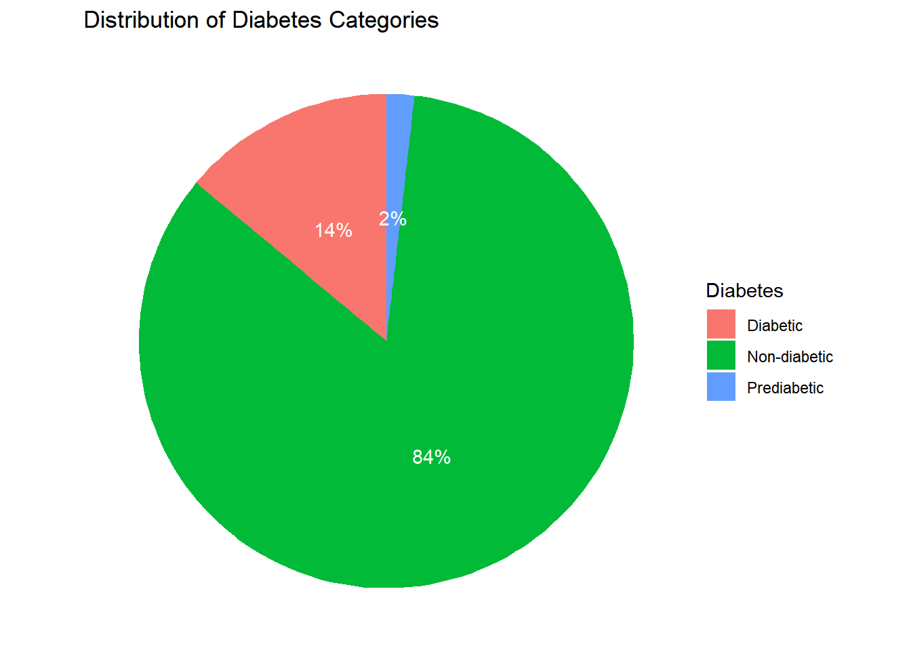
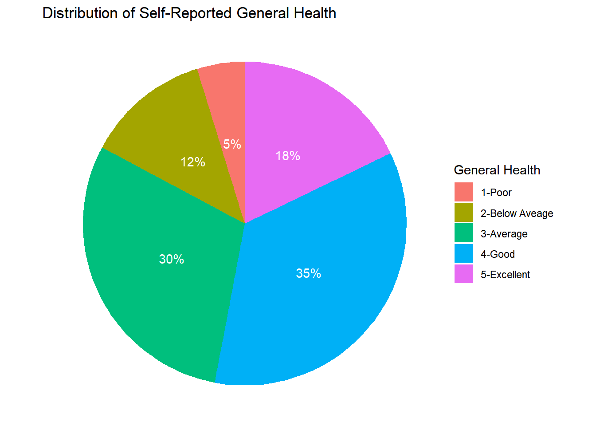
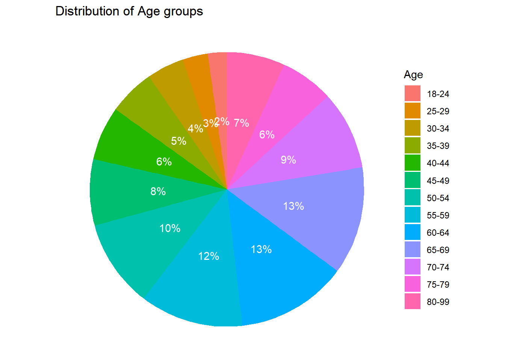
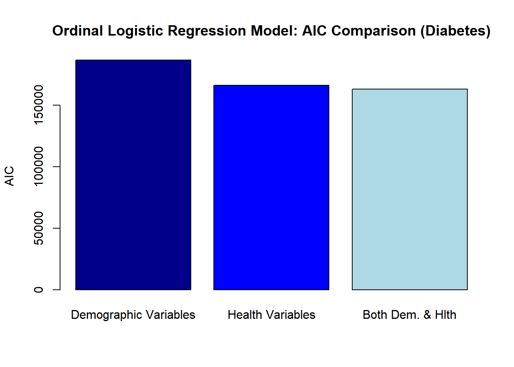
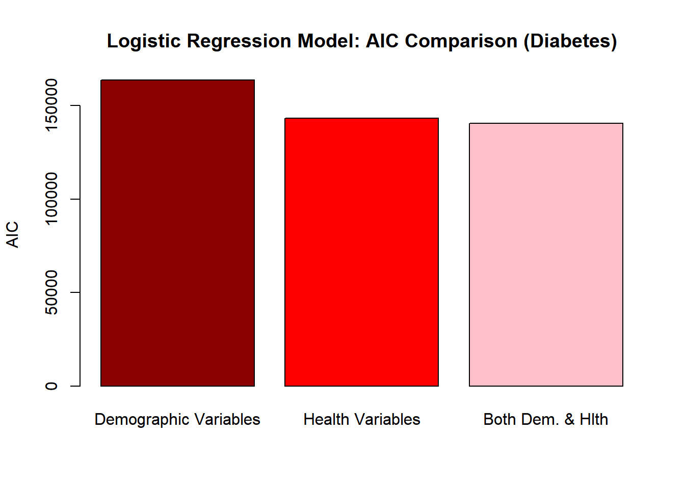
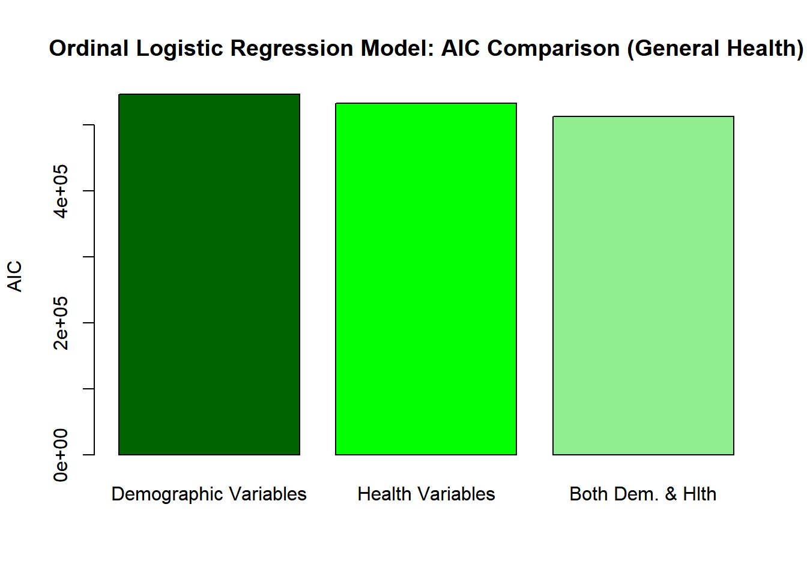

diabetes<- read_csv("_data/diabetes_012.csv",
col_types = cols(DiffWalk = col_skip()))Final Project - Diabetes and General Health
Introduction:
Diabetes, particularly type 2 diabetes, is a widespread chronic disease in the United States, impacting the health of millions and placing a significant financial strain on the US economy (Xie Z, Nikolayeva O, Luo J, Li D., 2019). Recently becoming aware of the risks associated with consuming too much sugary food, I am passionate about promoting overall health awareness among everyday people.
Xie et al. utilized the diabetes data set obtained from the 2014 Behavioral Risk Factor Surveillance System, which offers a wide array of observations associated with multiple significant variables.
This research project aims to further explore the relationship between general health and various socio-economic and demographic factors, such as income, education, and gender.
Note: For a summary of this project’s findings, please see link to poster: Poster link
Research Questions:
Research Question: How do demographic factors compare to health indicators in predicting the risk of type II diabetes and general health?
Hypothesis A: Among adults aged 30 and above, health factors are slightly more effective than demographic factors in predicting the occurrence of diabetes.
Hypothesis B: Demographic factors play a significantly larger role than health indicators in predicting general health.
Variables:
Diabetes: Indicates whether the individual has diabetes or not.
GenHlth: Represents the self-reported general health status of the individual, rescaled to a range of 1 (poor health) to 5 (excellent health).
HighBP: Indicates whether the individual has been diagnosed with high blood pressure or not.
HighChol: Indicates whether the individual has been diagnosed with high cholesterol or not.
CholCheck: Represents whether the individual has undergone cholesterol checks or screenings in the past 5 years.
BMI: Stands for Body Mass Index, a measure of body fat based on height and weight.
Smoker: Indicates whether the individual has smoked more than 100 cigarettes in their lifetime or not.
Stroke: Represents whether the individual has had a stroke or not.
HeartDiseaseorAttack: Indicates whether the individual has a history of heart disease or heart attacks.
PhysActivity: Indicates whether the individual reported engaging in any level of physical activity outside of their regular job or household activities in the past 30 days.
HvyAlcoholConsump: Indicates whether the individual consumes alcohol heavily. For men, it means consuming more than 14 alcoholic drinks per week, and for women, it means consuming more than 7 drinks per week.
NoDocbcCost: Indicates whether the individual has avoided visiting the doctor due to cost constraints.
MentHlth_low: Refers to the mental health status or conditions of the individual. It represents the number of poor mental health days the individual experienced in the past 30 days.
PhysHlth_low: Indicates the physical health status or conditions of the individual. It represents the number of days per month the individual’s physical health was poor.
Sex: Represents the biological sex of the individual. 0 indicates female, and 1 indicates male.
Age: Refers to the age group of the individual. Group 1 represents individuals aged 18-24 years old, and group 13 represents individuals aged 80 or older.
Education: Represents the educational attainment or level of the individual. The scale ranges from 1 (never attended any level of school beyond kindergarten) to 6 (college, 4 years or more).
Income: Indicates the income level or range of the individual. The scale ranges from 1 (less than $10,000 per annum) to 8 (greater than $75,000 per annum).
Diet: Refers to the dietary habits or patterns of the individual, specifically whether they consume fruits or vegetables at least once a day. The scale ranges from 0 (consumes neither fruits nor vegetables) to 3 (consumes both fruits and vegetables).
Strategy
This research project aims to investigate two main dependent variables: diabetes and general health. The goal is to develop models for predicting both variables and evaluate their performance using various metrics.
For predicting both variables, three models will be fitted: Ordinal Logistic Regression, Random Forest classification, and Logistic Regression.
The evaluation metrics for these models will include sensitivity, accuracy, AIC (Akaike Information Criterion), and confusion matrices. The prediction accuracy for both general health and diabetes will be compared to determine which models provide better predictions for each dependent variable.
Section 1: Data Preprocessing & Wrangling
Reading in Data
#Renaming Columns
diabetes <- diabetes %>%
rename(Diabetes = Diabetes_012, MentHlth_low = MentHlth, PhysHlth_low = PhysHlth)
#Re-factoring Diabetes & General Health
diabetes$GenHlth<- as.numeric(ifelse(diabetes$GenHlth == "1", 5, ifelse(diabetes$GenHlth == "2", 4, ifelse(diabetes$GenHlth== "3", 3, ifelse(diabetes$GenHlth== "4", 2, ifelse(diabetes$GenHlth == "5", 1, "N/A"))))))
diabetes$GenHlth <- diabetes$GenHlth %>% as.factor()
diabetes$Diabetes <- diabetes$Diabetes %>% as.factor()
#Merging 'Fruits' and 'Veggies' into one column called Diet
diabetes <- diabetes %>%
mutate(Diet= as.numeric(ifelse(Fruits + Veggies == 2, 3,ifelse(Fruits == 1 & Veggies==0, 2, ifelse(Veggies==1 & Fruits ==0, 1, "0")))))
# diabetes <- diabetes[,-c("Fruits", "Veggies" )]
diabetes <- diabetes[, !(colnames(diabetes) %in% c("Fruits", "Veggies"))]Section 2: Exploratory Data Analysis
Below are pie charts illustrating the proportion and distribution of diabetes categories, general health and the age groups of the respondents.
# Summarize the data to get the count of records in each category
summary_data <- diabetes %>%
count(Diabetes) %>%
mutate(Percentage = prop.table(n) * 100,
Total = sum(n)) %>%
mutate(Diabetes = case_when(
Diabetes == 0 ~ "Non-diabetic",
Diabetes == 1 ~ "Prediabetic",
Diabetes == 2 ~ "Diabetic"))
# Create the pie chart of Diabetes Categories
plot1 <- ggplot(summary_data, aes(x = "", y = n, fill = Diabetes)) +
geom_bar(stat = "identity", width = 1) +
coord_polar("y", start = 0) +
theme_void() +
labs(title = " Distribution of Diabetes Categories") +
geom_text(aes(label = paste0(round(Percentage) ,"%")),
position = position_stack(vjust = 0.5), color = "white")
plot1
summary_data <- diabetes %>%
count(GenHlth) %>%
mutate(Percentage = prop.table(n) * 100,
Total = sum(n)) %>%
mutate(GenHlth = case_when(
GenHlth == 1 ~ "1-Poor",
GenHlth == 2 ~ "2-Below Aveage",
GenHlth == 3 ~ "3-Average",
GenHlth == 4 ~ "4-Good",
GenHlth == 5 ~ "5-Excellent")
)
# Create the pie chart to show General Health Distribution
plot2 <- ggplot(summary_data, aes(x = "", y = n, fill = GenHlth)) +
geom_bar(stat = "identity", width = 1) +
coord_polar("y", start = 0) +
theme_void() +
labs(title = "Distribution of Self-Reported General Health" , fill= "General Health") +
geom_text(aes(label = paste0(round(Percentage) ,"%")),
position = position_stack(vjust = 0.5), color = "white")
plot2
summary_data <- diabetes %>%
count(Age) %>%
mutate(Percentage = prop.table(n) * 100,
Total = sum(n), Age=factor(Age) )%>%
mutate(Age = case_when(
Age == 1 ~ "18-24",
Age == 2 ~ "25-29",
Age == 3 ~ "30-34",
Age == 4 ~ "35-39",
Age == 5 ~ "40-44",
Age == 6 ~ "45-49",
Age == 7~ "50-54",
Age == 8 ~ "55-59",
Age == 9 ~ "60-64",
Age == 10 ~ "65-69",
Age == 11 ~ "70-74",
Age == 12 ~ "75-79",
Age == 13 ~ "80-99"))
# Create the pie chart to show Age Distribution
plot3 <- ggplot(summary_data, aes(x = "", y = n, fill = Age)) +
geom_bar(stat = "identity", width = 1) +
coord_polar("y", start = 0) +
theme_void() +
labs(title = "Distribution of Age groups" , fill= "Age") +
geom_text(aes(label = paste0(round(Percentage) ,"%")),
position = position_stack(vjust = 0.5), color = "white")
plot3
# Plot the correlation matrix for people with diabetes and pre-diabetes
# Create correlation matrix
correlation_matrix <- cor(diabetes %>% mutate(GenHlth=as.numeric(GenHlth), Diabetes = as.numeric(Diabetes)))
# Melt correlation matrix into long format for ggplot2
melted_correlation <- melt(correlation_matrix)
# Create heat map with ggplot2
ggplot(data = melted_correlation, aes(x = Var1, y = Var2, fill = value)) +
geom_tile() +
scale_fill_gradient2(low = "darkred", mid = "white", high = "darkgreen", midpoint = 0) +
theme_minimal() +
labs(x= "", y="")+
theme(axis.text.x = element_text(angle = 45, hjust = 1)) #+
#labs(title = "Correlation Matrix")Splitting the Data
# Create a data partition for cross-validation
set.seed(123)
partition <- createDataPartition(diabetes$Diabetes, p = 0.8, list = FALSE)
# Split the data into training and validation sets
train <- diabetes[partition, ]
valid <- diabetes[-partition, ]Section 3: Modelling for Diabetes
Random Forest
demographic_factors <- c("Sex", "Income", "Education", "Age", "NoDocbcCost")
health_indicators <- c("GenHlth", "BMI", "Smoker", "HighBP", "HighChol", "Stroke" , "HeartDiseaseorAttack" , "HvyAlcoholConsump" ,"Diet")
both <- c(demographic_factors, health_indicators)
response <- "Diabetes"diab_rf_dem <- train(x = train[,demographic_factors ], y =train[[response]], method = "rf", trControl = trainControl(method = "cv", number = 5), ntree=20)
diab_rf_hlth <- diab_rf_hlth <- train(x = train[,health_indicators ], y = train[[response]], method = "rf", trControl = trainControl(method = "cv", number = 5), ntree= 20)
diab_rf_both <- train(x = train[,both ], y = train[[response]], method = "rf", trControl = trainControl(method = "cv", number = 5), ntree= 20)actual <- factor(valid$Diabetes)
# Make predictions on the validation set
predictions_rf_dem <- predict(diab_rf_dem, newdata = valid[, demographic_factors]) %>% as.factor
# Make predictions on the validation set
predictions_rf_hlth <- predict(diab_rf_hlth, newdata = valid[, health_indicators]) %>% as.factor
# Make predictions on the validation set
predictions_rf_both <- predict(diab_rf_both, newdata = valid[, both]) %>% as.factor# Print the confusion matrix and accuracy of the model
cat("Demogrpahic Variables in RF")Demogrpahic Variables in RFconfusionMatrix(predictions_rf_dem, actual)Confusion Matrix and Statistics
Reference
Prediction 0 1 2
0 42734 926 7067
1 0 0 0
2 6 0 2
Overall Statistics
Accuracy : 0.8423
95% CI : (0.8391, 0.8455)
No Information Rate : 0.8424
P-Value [Acc > NIR] : 0.5224
Kappa : 2e-04
Mcnemar's Test P-Value : NA
Statistics by Class:
Class: 0 Class: 1 Class: 2
Sensitivity 0.9998596 0.00000 2.829e-04
Specificity 0.0002502 1.00000 9.999e-01
Pos Pred Value 0.8424311 NaN 2.500e-01
Neg Pred Value 0.2500000 0.98175 8.607e-01
Prevalence 0.8424165 0.01825 1.393e-01
Detection Rate 0.8422982 0.00000 3.942e-05
Detection Prevalence 0.9998423 0.00000 1.577e-04
Balanced Accuracy 0.5000549 0.50000 5.001e-01cat("Health Variables in RF")Health Variables in RFconfusionMatrix(predictions_rf_hlth, actual)Confusion Matrix and Statistics
Reference
Prediction 0 1 2
0 42333 894 6393
1 0 0 0
2 407 32 676
Overall Statistics
Accuracy : 0.8477
95% CI : (0.8446, 0.8508)
No Information Rate : 0.8424
P-Value [Acc > NIR] : 0.0005092
Kappa : 0.1199
Mcnemar's Test P-Value : < 2.2e-16
Statistics by Class:
Class: 0 Class: 1 Class: 2
Sensitivity 0.99048 0.00000 0.09563
Specificity 0.08856 1.00000 0.98995
Pos Pred Value 0.85314 NaN 0.60628
Neg Pred Value 0.63498 0.98175 0.87116
Prevalence 0.84242 0.01825 0.13933
Detection Rate 0.83439 0.00000 0.01332
Detection Prevalence 0.97802 0.00000 0.02198
Balanced Accuracy 0.53952 0.50000 0.54279cat("Demogrpahic & Health Variables in RF")Demogrpahic & Health Variables in RFconfusionMatrix(predictions_rf_both, actual)Confusion Matrix and Statistics
Reference
Prediction 0 1 2
0 42355 894 6381
1 0 0 0
2 385 32 688
Overall Statistics
Accuracy : 0.8484
95% CI : (0.8452, 0.8515)
No Information Rate : 0.8424
P-Value [Acc > NIR] : 0.0001062
Kappa : 0.1231
Mcnemar's Test P-Value : < 2.2e-16
Statistics by Class:
Class: 0 Class: 1 Class: 2
Sensitivity 0.99099 0.00000 0.09733
Specificity 0.09006 1.00000 0.99045
Pos Pred Value 0.85342 NaN 0.62262
Neg Pred Value 0.65158 0.98175 0.87143
Prevalence 0.84242 0.01825 0.13933
Detection Rate 0.83483 0.00000 0.01356
Detection Prevalence 0.97822 0.00000 0.02178
Balanced Accuracy 0.54052 0.50000 0.54389Ordinal Logistic Regression
# Fit ordinal logistic regression model for diabetes prediction using demographic factors
diab_olm_dem <- polr(Diabetes ~ Income*Education + Age + Sex + NoDocbcCost, data = train)
# Print the model summary
summary(diab_olm_dem)Call:
polr(formula = Diabetes ~ Income * Education + Age + Sex + NoDocbcCost,
data = train)
Coefficients:
Value Std. Error t value
Income -0.09324 0.013429 -6.944
Education -0.07608 0.015310 -4.969
Age 0.17403 0.002332 74.641
Sex 0.33003 0.012819 25.746
NoDocbcCost 0.34023 0.021590 15.759
Income:Education -0.01385 0.002734 -5.066
Intercepts:
Value Std. Error t value
0|1 2.0392 0.0739 27.5941
1|2 2.1931 0.0739 29.6681
Residual Deviance: 186572.36
AIC: 186588.36 diab_olm_hth <- polr(Diabetes~ GenHlth + BMI + Smoker+ HighBP + HighChol + Stroke + HeartDiseaseorAttack + HvyAlcoholConsump + Diet, data = train)
summary(diab_olm_hth)Call:
polr(formula = Diabetes ~ GenHlth + BMI + Smoker + HighBP + HighChol +
Stroke + HeartDiseaseorAttack + HvyAlcoholConsump + Diet,
data = train)
Coefficients:
Value Std. Error t value
GenHlth2 -0.18150 0.0263103 -6.899
GenHlth3 -0.66263 0.0250488 -26.454
GenHlth4 -1.37753 0.0270188 -50.984
GenHlth5 -2.06058 0.0385455 -53.458
BMI 0.05136 0.0009145 56.161
Smoker 0.04533 0.0136497 3.321
HighBP 0.92404 0.0149636 61.753
HighChol 0.66858 0.0141728 47.173
Stroke 0.26567 0.0267760 9.922
HeartDiseaseorAttack 0.40902 0.0188064 21.749
HvyAlcoholConsump -0.81188 0.0390895 -20.770
Diet -0.01702 0.0058222 -2.924
Intercepts:
Value Std. Error t value
0|1 3.2094 0.0417 76.9570
1|2 3.3839 0.0418 80.9461
Residual Deviance: 165914.43
AIC: 165942.43 diab_olm_both <- polr(Diabetes~ Income*Education + Age + Sex + NoDocbcCost + GenHlth+ BMI + Smoker+ HighBP + HighChol + Stroke + HeartDiseaseorAttack + HvyAlcoholConsump + Diet, data = train)# Predictions using demographic indicators with OLM
predictions_olm_dem <- predict(diab_olm_dem, newdata= valid)
# Predictions using health indicators with OLM
predictions_olm_hlth <- predict(diab_olm_hth, newdata= valid)
# Predictions using health indicators with both
predictions_olm_both <- predict(diab_olm_both, newdata= valid)
# Extract the response variable from the training data
actual <- valid$Diabetes# Confusion matrix for demographic variables
cat("Demographic Variables in Ordinal logistic model")Demographic Variables in Ordinal logistic modelconfusionMatrix(predictions_olm_dem, actual)Confusion Matrix and Statistics
Reference
Prediction 0 1 2
0 42689 925 7049
1 0 0 0
2 51 1 20
Overall Statistics
Accuracy : 0.8418
95% CI : (0.8386, 0.845)
No Information Rate : 0.8424
P-Value [Acc > NIR] : 0.6499
Kappa : 0.0024
Mcnemar's Test P-Value : <2e-16
Statistics by Class:
Class: 0 Class: 1 Class: 2
Sensitivity 0.998807 0.00000 0.0028293
Specificity 0.002627 1.00000 0.9988091
Pos Pred Value 0.842607 NaN 0.2777778
Neg Pred Value 0.291667 0.98175 0.8608649
Prevalence 0.842416 0.01825 0.1393318
Detection Rate 0.841411 0.00000 0.0003942
Detection Prevalence 0.998581 0.00000 0.0014191
Balanced Accuracy 0.500717 0.50000 0.5008192# Confusion matrix for health indicators
cat("Health Variables in Ordinal logistic model")Health Variables in Ordinal logistic modelconfusionMatrix(predictions_olm_hlth, actual)Confusion Matrix and Statistics
Reference
Prediction 0 1 2
0 41876 872 5984
1 0 0 0
2 864 54 1085
Overall Statistics
Accuracy : 0.8468
95% CI : (0.8436, 0.8499)
No Information Rate : 0.8424
P-Value [Acc > NIR] : 0.003513
Kappa : 0.1733
Mcnemar's Test P-Value : < 2.2e-16
Statistics by Class:
Class: 0 Class: 1 Class: 2
Sensitivity 0.9798 0.00000 0.15349
Specificity 0.1425 1.00000 0.97898
Pos Pred Value 0.8593 NaN 0.54169
Neg Pred Value 0.5686 0.98175 0.87721
Prevalence 0.8424 0.01825 0.13933
Detection Rate 0.8254 0.00000 0.02139
Detection Prevalence 0.9605 0.00000 0.03948
Balanced Accuracy 0.5611 0.50000 0.56623# Confusion matrix for health indicators
cat("Demographic & health Variables in Ordinal logistic model")Demographic & health Variables in Ordinal logistic modelconfusionMatrix(predictions_olm_both, actual)Confusion Matrix and Statistics
Reference
Prediction 0 1 2
0 41749 862 5910
1 0 0 0
2 991 64 1159
Overall Statistics
Accuracy : 0.8457
95% CI : (0.8426, 0.8489)
No Information Rate : 0.8424
P-Value [Acc > NIR] : 0.02041
Kappa : 0.1806
Mcnemar's Test P-Value : < 2e-16
Statistics by Class:
Class: 0 Class: 1 Class: 2
Sensitivity 0.9768 0.00000 0.16396
Specificity 0.1530 1.00000 0.97584
Pos Pred Value 0.8604 NaN 0.52349
Neg Pred Value 0.5524 0.98175 0.87820
Prevalence 0.8424 0.01825 0.13933
Detection Rate 0.8229 0.00000 0.02284
Detection Prevalence 0.9564 0.00000 0.04364
Balanced Accuracy 0.5649 0.50000 0.56990Logistic Regression
Note: The diabetes data was subsequently recoded to merge individuals classified as pre-diabetic and non-diabetic, creating two distinct classes. A value of 0 was assigned to those who were non-diabetic or pre-diabetic, while a value of 2 was assigned to those classified as diabetic.
This re-coding process sets the stage for logistic regression analysis, aiming to evaluate how it compares to the sensitivity of the ordinal logistic model.
#count of prediabetics
cat( "Number of pre-diabetics: ", length(diabetes$Diabetes[diabetes$Diabetes == "1"]))
#Merging pre-diabetics with non-diabetics
diabetes_binary <- diabetes
diabetes_binary$Diabetes[diabetes_binary$Diabetes == "1"] <- 0#count of prediabetics
cat( "Number of pre-diabetics: ", length(diabetes$Diabetes[diabetes$Diabetes == "1"]))Number of pre-diabetics: 4631#Merging pre-diabetics with non-diabetics
diabetes_binary <- diabetes
diabetes_binary$Diabetes[diabetes_binary$Diabetes == "1"] <- 2demographic_factors <- c("Sex", "Income", "Education", "Age", "NoDocbcCost")
health_indicators <- c("GenHlth", "BMI", "Smoker", "HighBP", "HighChol", "Stroke" , "HeartDiseaseorAttack" , "HvyAlcoholConsump" ,"Diet")
both <- c(demographic_factors, health_indicators)
#Merging pre-diabetics with non-diabetics
diabetes_binary <- diabetes
diabetes_binary$Diabetes[diabetes_binary$Diabetes == "1"] <- 2
# Create a data partition for cross-validation
set.seed(123)
partition <- createDataPartition(diabetes_binary$Diabetes, p = 0.8, list = FALSE)
# Split the data into training and validation sets
train2 <- diabetes_binary[partition, ]
valid2 <- diabetes_binary[-partition, ]
# LR models
diab_lr_dem <- multinom(Diabetes ~ Income*Education + Age + Sex + NoDocbcCost, data = train2)# weights: 8 (7 variable)
initial value 140670.754559
iter 10 value 81880.470998
final value 81875.856658
convergeddiab_lr_hlth <- multinom(Diabetes ~ GenHlth + BMI + HighBP + HighChol + Stroke + HeartDiseaseorAttack + HvyAlcoholConsump + Diet, data = train2)# weights: 13 (12 variable)
initial value 140670.754559
iter 10 value 81796.759194
iter 20 value 71657.874488
final value 71657.844798
convergeddiab_lr_both <- multinom(Diabetes ~ Income*Education + Age + Sex + NoDocbcCost + GenHlth +BMI + HighBP + HighChol + Stroke + HeartDiseaseorAttack + HvyAlcoholConsump + Diet, data = train2)# weights: 19 (18 variable)
initial value 140670.754559
iter 10 value 75778.902970
iter 20 value 74308.882164
final value 70218.660619
convergedactual <- factor(valid2$Diabetes)
# Make predictions on the validation set
predictions_lr_dem <- predict(diab_lr_dem, newdata = valid2[, demographic_factors]) %>% as.factor
# Make predictions on the validation set
predictions_lr_hlth <- predict(diab_lr_hlth, newdata = valid2[, health_indicators]) %>% as.factor
# Make predictions on the validation set
predictions_lr_both <- predict(diab_lr_both, newdata = valid2[, both]) %>% as.factor
# Print the confusion matrix and accuracy of the model
cat("Demographic Variables in logistic regression model")Demographic Variables in logistic regression modelconfusionMatrix(predictions_lr_dem, actual)Confusion Matrix and Statistics
Reference
Prediction 0 2
0 42659 7960
2 81 35
Accuracy : 0.8415
95% CI : (0.8383, 0.8447)
No Information Rate : 0.8424
P-Value [Acc > NIR] : 0.7148
Kappa : 0.0041
Mcnemar's Test P-Value : <2e-16
Sensitivity : 0.998105
Specificity : 0.004378
Pos Pred Value : 0.842747
Neg Pred Value : 0.301724
Prevalence : 0.842416
Detection Rate : 0.840820
Detection Prevalence : 0.997714
Balanced Accuracy : 0.501241
'Positive' Class : 0
cat("Health Variables in logistic regression model")Health Variables in logistic regression modelconfusionMatrix(predictions_lr_hlth, actual)Confusion Matrix and Statistics
Reference
Prediction 0 2
0 41694 6637
2 1046 1358
Accuracy : 0.8486
95% CI : (0.8454, 0.8517)
No Information Rate : 0.8424
P-Value [Acc > NIR] : 6.819e-05
Kappa : 0.2031
Mcnemar's Test P-Value : < 2.2e-16
Sensitivity : 0.9755
Specificity : 0.1699
Pos Pred Value : 0.8627
Neg Pred Value : 0.5649
Prevalence : 0.8424
Detection Rate : 0.8218
Detection Prevalence : 0.9526
Balanced Accuracy : 0.5727
'Positive' Class : 0
cat("Demographic & health Variables in logistic regression model")Demographic & health Variables in logistic regression modelconfusionMatrix(predictions_lr_both, actual)Confusion Matrix and Statistics
Reference
Prediction 0 2
0 41544 6540
2 1196 1455
Accuracy : 0.8475
95% CI : (0.8444, 0.8506)
No Information Rate : 0.8424
P-Value [Acc > NIR] : 0.0007823
Kappa : 0.2115
Mcnemar's Test P-Value : < 2.2e-16
Sensitivity : 0.9720
Specificity : 0.1820
Pos Pred Value : 0.8640
Neg Pred Value : 0.5488
Prevalence : 0.8424
Detection Rate : 0.8188
Detection Prevalence : 0.9477
Balanced Accuracy : 0.5770
'Positive' Class : 0
Section 4: Model Comparison (Diabetes)
model_names <- c("Demographic Variables", "Health Variables", "Both Dem. & Hlth")
AIC_values_olm <- c(AIC(diab_olm_dem), AIC(diab_olm_hth), AIC(diab_olm_both))
# BIC_values_olm <- c(BIC(diab_olm_dem), BIC(diab_olm_hth), BIC(diab_olm_both))
# Plotting AIC values
barplot(AIC_values_olm, names.arg = model_names, ylab = "AIC", main = "Ordinal Logistic Regression Model: AIC Comparison (Diabetes)", col = c("darkblue", "blue", "lightblue"))
AIC_values_lr <- c(AIC(diab_lr_dem), AIC(diab_lr_hlth), AIC(diab_lr_both))
# Plotting AIC values
barplot(AIC_values_lr, names.arg = model_names, ylab = "AIC", main = "Logistic Regression Model: AIC Comparison (Diabetes)", col = c("darkred", "red", "pink"))
Section 5: Modelling for General Health
Random Forest
#### Random Forest
demographic_factors <- c("Sex", "Income", "Education", "Age", "NoDocbcCost")
health_indicators <- c( "Diabetes" ,"BMI", "Smoker", "HighBP", "HighChol", "Stroke" , "HeartDiseaseorAttack" , "HvyAlcoholConsump" ,"Diet")
both <- c(demographic_factors, health_indicators)
response <- "GenHlth"
gen_rf_dem <- train(x = train[,demographic_factors ], y =train[[response]], method = "rf", trControl = trainControl(method = "cv", number = 5), ntree=15)
gen_rf_hlth <- train(x = train[,health_indicators ], y = train[[response]], method = "rf", trControl = trainControl(method = "cv", number = 5), ntree= 15)
gen_rf_both <- train(x = train[,both ], y = train[[response]], method = "rf", trControl = trainControl(method = "cv", number = 5), ntree= 15)
# Predictions
valid$GenHlth <- valid$GenHlth %>% as.factor
actual_gen <- (valid$GenHlth) %>% as.factor()
# Make predictions on the validation set using demographic factors
predictions_gen_rf_dem <- predict(gen_rf_dem, newdata = valid[, demographic_factors]) %>% as.factor()
# Make predictions on the validation set using health factors
predictions_gen_rf_hlth <- predict(gen_rf_hlth, newdata = valid[, health_indicators]) %>% as.factor()
# Make predictions on the validation set using health factors
predictions_gen_rf_both <- predict(gen_rf_both, newdata = valid[, both]) %>% as.factor()
#predictions_gen_rf_dem <- factor(predictions_gen_rf_dem, levels = levels(actual_gen))
#predictions_gen_rf_both <- factor(predictions_gen_rf_both, levels = levels(actual_gen))
# Print the confusion matrix and accuracy of the model
confusionMatrix(predictions_gen_rf_dem, actual_gen)
confusionMatrix(predictions_gen_rf_hlth, actual_gen)
confusionMatrix(predictions_gen_rf_both, actual_gen)Ordinal Logistic Model
diabetes$GenHlth <- diabetes$GenHlth %>% as.factor()
# Split the data into training and validation sets
train <- diabetes[partition, ]
valid <- diabetes[-partition, ]
# Fit ordinal logistic regression model for diabetes prediction using demographic factors
gen_olm_dem <- polr(GenHlth ~ Income*Education + Age + Sex + NoDocbcCost, data = train)
# Print the model summary
summary(gen_olm_dem)Call:
polr(formula = GenHlth ~ Income * Education + Age + Sex + NoDocbcCost,
data = train)
Coefficients:
Value Std. Error t value
Income 0.247518 0.009676 25.582
Education 0.268930 0.011905 22.590
Age -0.074559 0.001367 -54.551
Sex -0.175646 0.008252 -21.285
NoDocbcCost -0.787298 0.015327 -51.368
Income:Education 0.003006 0.001949 1.542
Intercepts:
Value Std. Error t value
1|2 -1.1290 0.0569 -19.8344
2|3 0.4422 0.0570 7.7600
3|4 2.1254 0.0574 36.9993
4|5 3.9489 0.0575 68.6786
Residual Deviance: 546445.71
AIC: 546465.71 #OLR model
gen_olm_hth <- polr(GenHlth~ Diabetes + BMI + Smoker+ HighBP + HighChol + Stroke + HeartDiseaseorAttack + HvyAlcoholConsump + Diet, data = train)
summary(gen_olm_hth)Call:
polr(formula = GenHlth ~ Diabetes + BMI + Smoker + HighBP + HighChol +
Stroke + HeartDiseaseorAttack + HvyAlcoholConsump + Diet,
data = train)
Coefficients:
Value Std. Error t value
Diabetes1 -0.6437 0.0305433 -21.08
Diabetes2 -0.9534 0.0127099 -75.01
BMI -0.0492 0.0006732 -73.08
Smoker -0.4205 0.0083976 -50.07
HighBP -0.6254 0.0091414 -68.41
HighChol -0.2767 0.0087734 -31.54
Stroke -0.9755 0.0217750 -44.80
HeartDiseaseorAttack -0.9949 0.0150702 -66.02
HvyAlcoholConsump 0.2017 0.0178414 11.31
Diet 0.1523 0.0036542 41.68
Intercepts:
Value Std. Error t value
1|2 -5.4235 0.0255 -212.4224
2|3 -3.7883 0.0233 -162.9228
3|4 -2.0268 0.0220 -92.0342
4|5 -0.1318 0.0216 -6.0947
Residual Deviance: 533054.80
AIC: 533082.80 gen_olm_both <- polr(GenHlth~ Diabetes +BMI + Smoker+ HighBP + HighChol + Stroke + HeartDiseaseorAttack + HvyAlcoholConsump + Diet + Income*Education + Age + Sex + NoDocbcCost
, data = train)# Predictions using demographic indicators with OLM
predictions_olm_dem_gen <- predict(gen_olm_dem, newdata= valid)
# Predictions using health indicators with OLM
predictions_olm_hlth_gen <- predict(gen_olm_hth, newdata= valid)
# Predictions using health indicators with OLM
predictions_olm_both_gen <- predict(gen_olm_both, newdata= valid)
# Extract the response variable from the training data
actual_gen_olm <- valid$GenHlth# Confusion matrix for demographic variables
confusionMatrix(predictions_olm_dem_gen, actual_gen_olm)Confusion Matrix and Statistics
Reference
Prediction 1 2 3 4 5
1 19 14 8 6 1
2 334 470 366 155 57
3 1669 3784 6356 4563 1640
4 489 2069 8264 12994 7285
5 0 5 38 92 57
Overall Statistics
Accuracy : 0.3922
95% CI : (0.3879, 0.3964)
No Information Rate : 0.351
P-Value [Acc > NIR] : < 2.2e-16
Kappa : 0.1002
Mcnemar's Test P-Value : < 2.2e-16
Statistics by Class:
Class: 1 Class: 2 Class: 3 Class: 4 Class: 5
Sensitivity 0.0075667 0.074109 0.4228 0.7296 0.006305
Specificity 0.9993986 0.979456 0.6735 0.4501 0.996762
Pos Pred Value 0.3958333 0.340087 0.3529 0.4178 0.296875
Neg Pred Value 0.9508355 0.881020 0.7349 0.7547 0.822270
Prevalence 0.0494925 0.125002 0.2963 0.3510 0.178181
Detection Rate 0.0003745 0.009264 0.1253 0.2561 0.001123
Detection Prevalence 0.0009461 0.027240 0.3550 0.6130 0.003784
Balanced Accuracy 0.5034827 0.526783 0.5482 0.5898 0.501534# Confusion matrix for health indicators
confusionMatrix(predictions_olm_hlth_gen, actual_gen_olm)Confusion Matrix and Statistics
Reference
Prediction 1 2 3 4 5
1 152 145 81 32 5
2 439 763 627 220 41
3 1245 3275 6124 4099 938
4 667 2144 8141 13291 7845
5 8 15 59 168 211
Overall Statistics
Accuracy : 0.4049
95% CI : (0.4006, 0.4092)
No Information Rate : 0.351
P-Value [Acc > NIR] : < 2.2e-16
Kappa : 0.1238
Mcnemar's Test P-Value : < 2.2e-16
Statistics by Class:
Class: 1 Class: 2 Class: 3 Class: 4 Class: 5
Sensitivity 0.060534 0.12031 0.4074 0.7463 0.023341
Specificity 0.994546 0.97011 0.7323 0.4291 0.994004
Pos Pred Value 0.366265 0.36507 0.3905 0.4142 0.457701
Neg Pred Value 0.953120 0.88531 0.7459 0.7577 0.824382
Prevalence 0.049492 0.12500 0.2963 0.3510 0.178181
Detection Rate 0.002996 0.01504 0.1207 0.2620 0.004159
Detection Prevalence 0.008180 0.04119 0.3091 0.6325 0.009086
Balanced Accuracy 0.527540 0.54521 0.5699 0.5877 0.508672# Confusion matrix for both indicators
confusionMatrix(predictions_olm_both_gen, actual_gen_olm)Confusion Matrix and Statistics
Reference
Prediction 1 2 3 4 5
1 251 228 98 28 9
2 698 1089 828 236 68
3 1211 3582 6898 4285 1135
4 339 1414 7017 12406 6639
5 12 29 191 855 1189
Overall Statistics
Accuracy : 0.4303
95% CI : (0.426, 0.4347)
No Information Rate : 0.351
P-Value [Acc > NIR] : < 2.2e-16
Kappa : 0.1766
Mcnemar's Test P-Value : < 2.2e-16
Statistics by Class:
Class: 1 Class: 2 Class: 3 Class: 4 Class: 5
Sensitivity 0.099960 0.17171 0.4589 0.6966 0.13153
Specificity 0.992473 0.95878 0.7139 0.5320 0.97393
Pos Pred Value 0.408795 0.37307 0.4031 0.4460 0.52241
Neg Pred Value 0.954909 0.89014 0.7581 0.7642 0.83799
Prevalence 0.049492 0.12500 0.2963 0.3510 0.17818
Detection Rate 0.004947 0.02146 0.1360 0.2445 0.02344
Detection Prevalence 0.012102 0.05753 0.3373 0.5482 0.04486
Balanced Accuracy 0.546216 0.56524 0.5864 0.6143 0.55273Section 6: Model Comparison Part 2 (General Health)
model_names <- c("Demographic Variables", "Health Variables", "Both Dem. & Hlth")
AIC_values_olm_gen <- c(AIC(gen_olm_dem), AIC(gen_olm_hth), AIC(gen_olm_both))
# Plotting AIC values
barplot(AIC_values_olm_gen, names.arg = model_names, ylab = "AIC", main = "Ordinal Logistic Regression Model: AIC Comparison (General Health)", col = c("darkgreen", "green", "lightgreen"))
Section 7: Summary of Findings
Diabetes
Contrary to the primary hypothesis, demographic variables alone demonstrate very limited effectiveness in predicting diabetes. In contrast, health indicators exhibit superior predictive capability for diabetes. When combining demographic variables with health indicators, there are only slight improvements in model accuracy and sensitivity compared to models fitted solely with health variables.
Comparing the predictive performance of different models for diabetes and general health, the ordinal logistic regression model outperformed the random forest and logistic regression models.
Logistic regression models (Fig.5) exhibited a lower AIC across all groups of variables after recoding the response variable, but sensitivity did not improve.
General Health
Demographic variables were more effective at predicting general health than classifying the presence of diabetes.
In all models, including the random forest model, demographic variables such as age, sex, income, and education provided close predictions of general health for individuals. It is worth noting that the random forest model was less likely to classify respondents as having excellent health, typically predicting on a scale of 1-4
This behavior may be attributed to the mismatch in sample size between the classes and the random forest model needing to sample across a wide number of trees to determine the most likely outcome. As a result, the predictions leaned towards good health but not excellent health, which aligns with the tendency of respondents to report higher general health ratings for themselves.
Section 8: Conclusion
Fitting additional variables has minimal impact on accuracy and the true-positive rate. Health indicators alone are sufficient for predicting diabetes, as demographic variables, whether considered individually or in combination with health indicators, do not contribute significantly to predictive power.
While health indicators alone may be suitable for diabetes prediction (despite a relatively low 15% sensitivity rate), it is important to acknowledge that the data relies on self-reports, which may introduce response bias or rating inflation.
The findings did not substantially support the secondary hypothesis. For predicting general health, regression with a continuous outcome variable and metrics like root mean squared error could have provided a better measure of model performance. However, this aspect was beyond the scope of the project.
The correlation matrix reveals a moderate relationship between demographic variables (such as income and age) and certain key health indicators. Although this relationship exists, it is not strong enough for demographic variables to predict (either diabetes or general health) well in the absence of health factors.